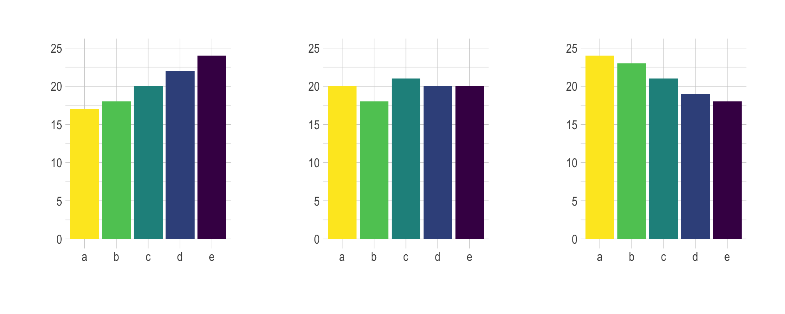
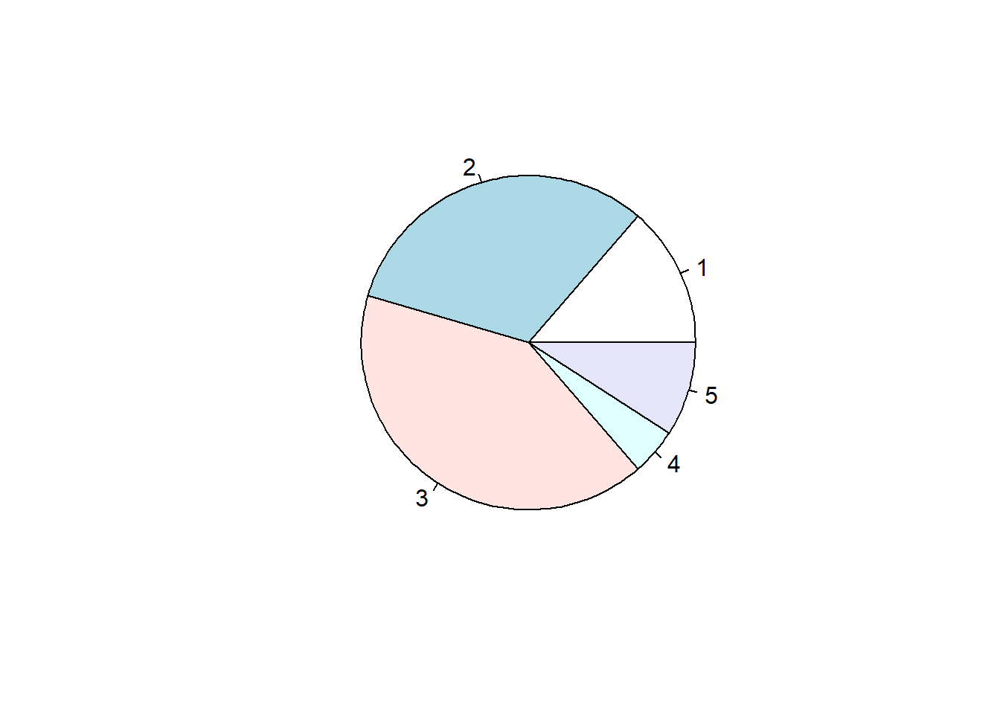
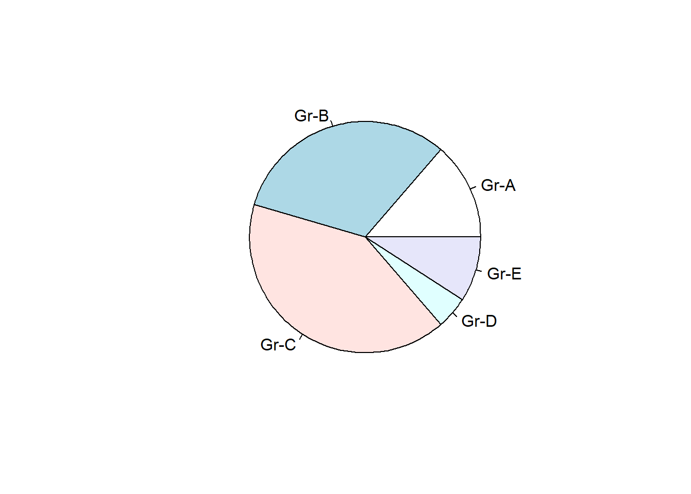
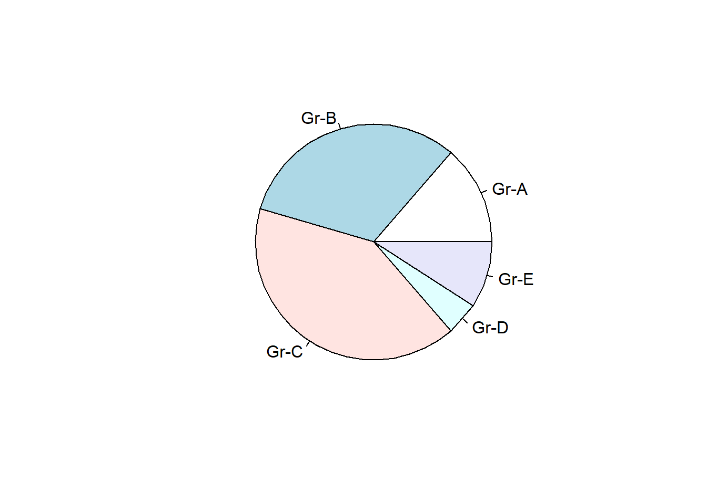
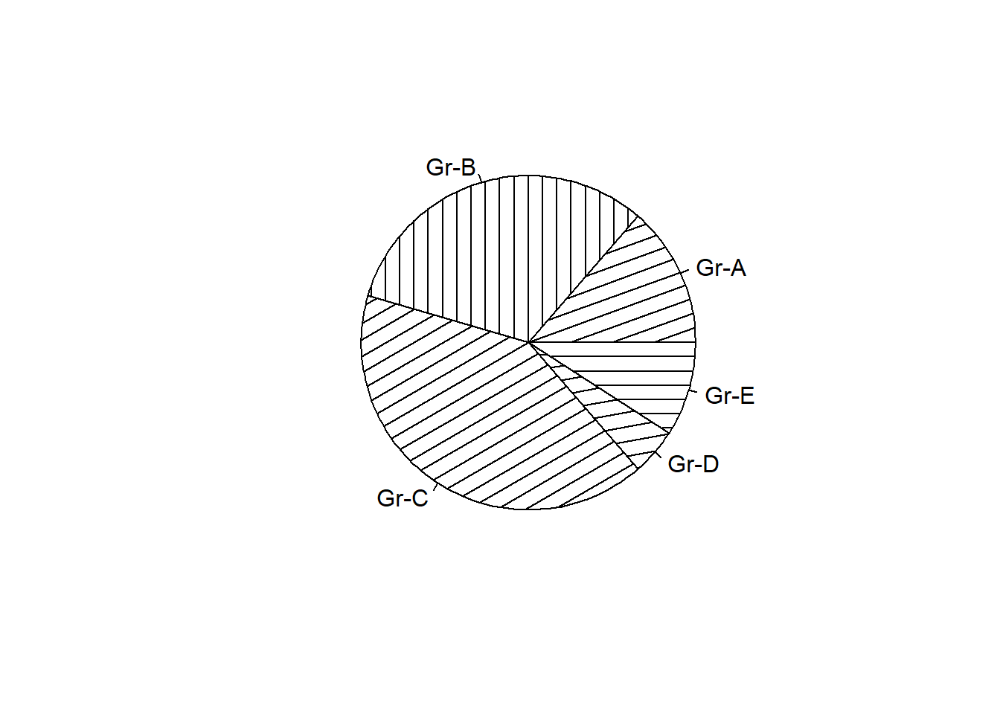
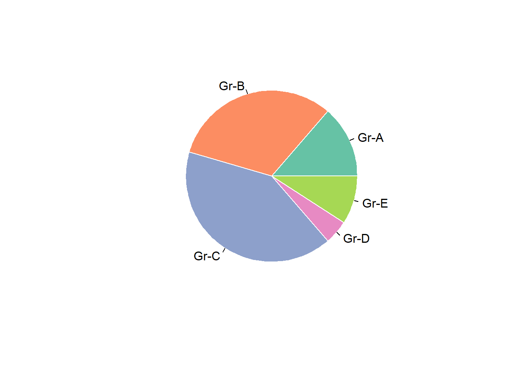
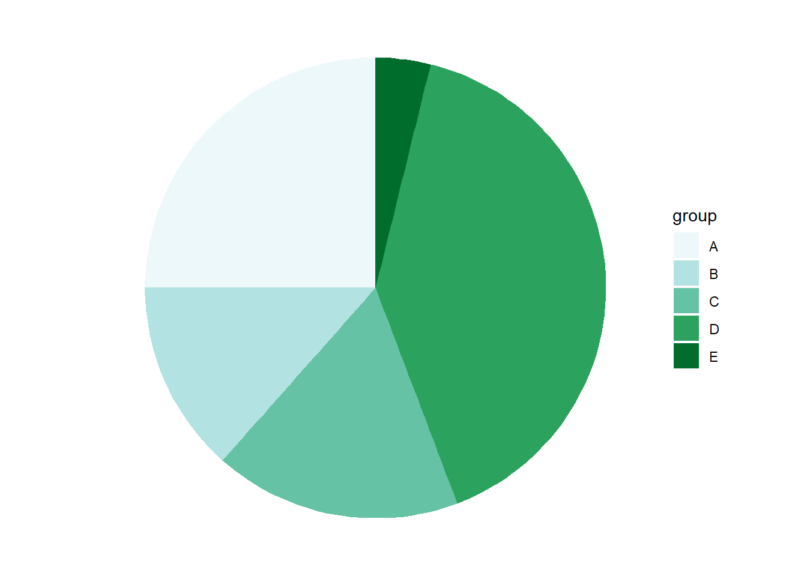

Show/Hide Code
library(tidyverse)
library(RColorBrewer) # 用于调色板饼图在科研数据可视化领域非常不受待见的图形, 但在商业领域仍然有其应用场景.
谨慎使用饼图，或者，使用 条形图、棒棒糖图、树状图 等替代方案。
library(tidyverse)
library(RColorBrewer) # 用于调色板饼图是一个被分成扇区的圆，每个扇区代表整体的一部分。它通常用于显示百分比，其中所有扇区的总和等于 100%。
可读性太差了!，尤其是当扇区的大小相似时。人们很难准确地比较不同扇区的大小。
同样的数据用条形图表示就清晰多了:

饼图还有一些讨厌的问题:
最好的替代是条形图,如果数据很多,可以使用棒棒糖图,会更优雅一点.
基于世界上几个国家 武器销售 数量的例子：
为了描述整体的组成,还可以使用树状图, 例如:
pie()Base R::pie() 函数用于绘制饼图.
Prop <- c(3,7,9,1,2)
pie(Prop)
labelspie(Prop , labels = c("Gr-A","Gr-B","Gr-C","Gr-D","Gr-E"))
可以通过 edges 参数(多边形的边数)来绘制非圆形的饼图, 例如:
pie(Prop, labels = c("Gr-A", "Gr-B", "Gr-C", "Gr-D", "Gr-E"), edges = 50)
pie(
Prop,
labels = c("Gr-A", "Gr-B", "Gr-C", "Gr-D", "Gr-E"),
density = 10, # 设置阴影密度
angle = c(20, 90, 30, 10, 0) # 设置每个扇区的阴影角度
)
使用 col 更改组颜色，使用 border 更改边框颜色。
# library(RColorBrewer) # 用于调色板
myPalette <- brewer.pal(5, "Set2")
pie(
Prop,
labels = c("Gr-A", "Gr-B", "Gr-C", "Gr-D", "Gr-E"),
border = "white", # 设置边框颜色为白色
col = myPalette # 使用调色板
)
geom_bar()由于饼图不受待见, ggplot2 没有提供专门的饼图函数, 但可以使用 geom_bar() 绘制饼图. 核心技术:
geom_bar() 函数创建一个仅包含一个条形的堆叠条形图coord_polar() 使其呈圆形# 创建数据框
data <- data.frame(
group = LETTERS[1:5],
value = c(13, 7, 9, 21, 2)
)
# 绘制饼图
ggplot(data, aes(x = "", y = value, fill = group)) +
geom_bar(stat = "identity", width = 1) + # identity 创建堆叠条形图
coord_polar("y", start = 0) + # 将条形图转换为极坐标系
scale_fill_brewer(palette = 2) # 设置配色方案上面的图看起来不太对,不像饼图, 继续移除 x 轴和 y 轴的标签,和背景:
# 移除x 轴和 y 轴的标签和背景
ggplot(data, aes(x = "", y = value, fill = group)) +
geom_bar(stat = "identity", width = 1) + # identity 创建堆叠条形图
coord_polar("y", start = 0) + # 将条形图转换为极坐标系
scale_fill_brewer(palette = 2) + # 设置配色方案
theme_void() # 移除背景和坐标轴
因为使用了 coord_polar()，所以计算文本标签的位置比较复杂.
# 1. 按 group 降序排列，计算每组所占百分比和标签位置
data <- data |>
arrange(desc(group)) |> # 按 group 降序排列
mutate(
prop = value / sum(data$value) * 100, # 计算百分比
ypos = cumsum(prop) - 0.5 * prop # 计算标签位置
)
# 2. 绘制饼图
ggplot(data, aes(x = "", y = prop, fill = group)) +
geom_bar(stat = "identity", width = 1, color = "white") + # 绘制堆叠条形图
coord_polar("y", start = 0) + # 转换为极坐标系（饼图）
geom_text(
aes(y = ypos, label = group), # 添加标签
color = "white", size = 6
) +
scale_fill_brewer(palette = 2) + # 设置配色方案
theme_void() + # 移除背景和坐标轴
theme(legend.position = "none") # 移除图例大功告成!